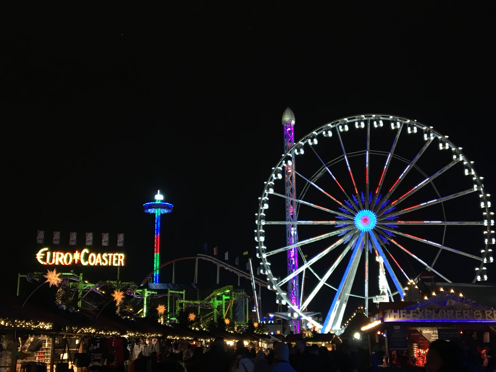

London at Christmas Time
Being from South Africa, my Christmases have almost always been very hot and very sunny. Nowhere near the typical snowy scene you’d see on a Christmas card or in most Christmas movies. Even now, I’ve still never experienced a white Christmas because I always spend it at home with family. I just got back from a trip to London and I was so in awe of the Christmas spirit around and how different it was from back home (and I don’t just mean the weather).
There are lights almost everywhere and it looks so beautiful at night. Some of the displays are so impressive. There are so many Christmas markets and festivals around the city, such as Winter Wonderland in Hyde Park. Winter Wonderland was a lot of fun, I’d definitely recommend spending an evening there enjoying the rides, market and the ice skating. Speaking of ice skating, there are a lot of outdoor ice skating rinks set up for the festive season and it is such a fun way to spend an evening with friends or a significant other.
A lot of the markets around London are open later, as well as some of the shops in case you need to do some evening Christmas shopping. I went to Harrods on one evening and they had a Christmas parade through the store – whether this was a regular occurrence or I just happened to go at the right time, I’m not sure.